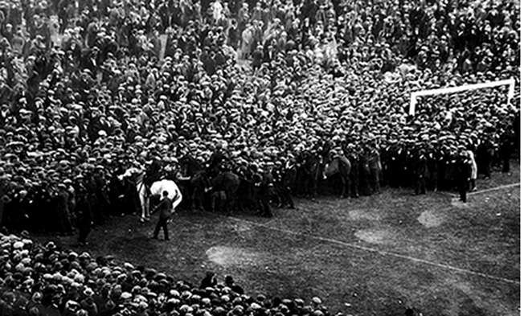
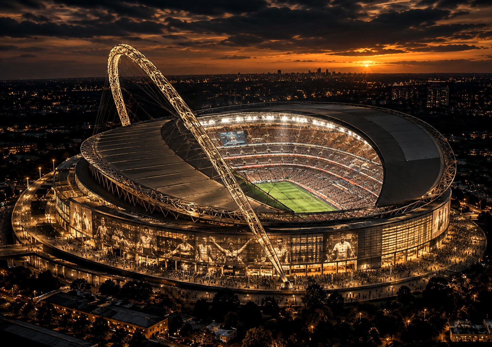
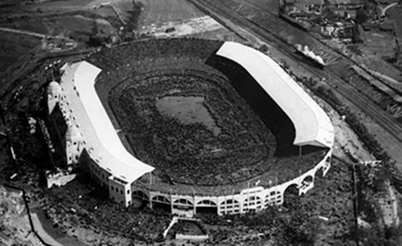
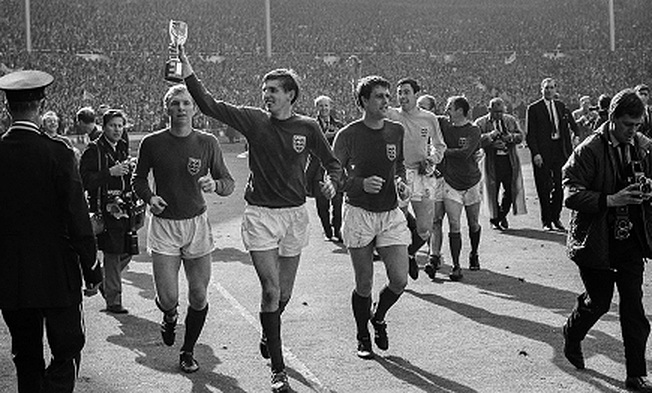
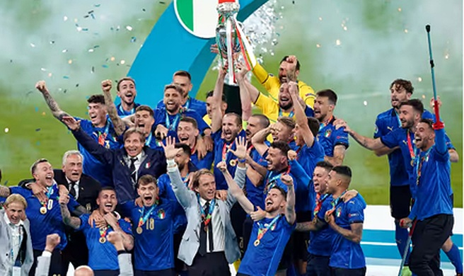

1923
LA FINALE DEL CAVALLO BIANCO
La prima finale di FA Cup a Wembley passò alla leggenda per la folla traboccante controllata con calma da un celebre poliziotto su cavallo bianco.


↗
LONDRA, INGHILTERRA
Dove la storia incontra il futuro.
Inaugurato nel 2007, il nuovo Wembley ha raccolto l'eredità dello storico impianto del 1923, diventando il simbolo moderno e la casa per eccellenza del calcio inglese e dei grandi eventi planetari.

APRI IMMAGINE ↗La prima finale di FA Cup a Wembley passò alla leggenda per la folla traboccante controllata con calma da un celebre poliziotto su cavallo bianco.

↗Bobby Moore e l'Inghilterra conquistano la loro prima e unica Coppa del Mondo FIFA battendo la Germania Ovest nella celebre finale del '66.

↗L'11 luglio 2021 l'Italia di Roberto Mancini supera l'Inghilterra ai rigori, conquistando il titolo europeo nel cuore pulsante di Londra.

↗